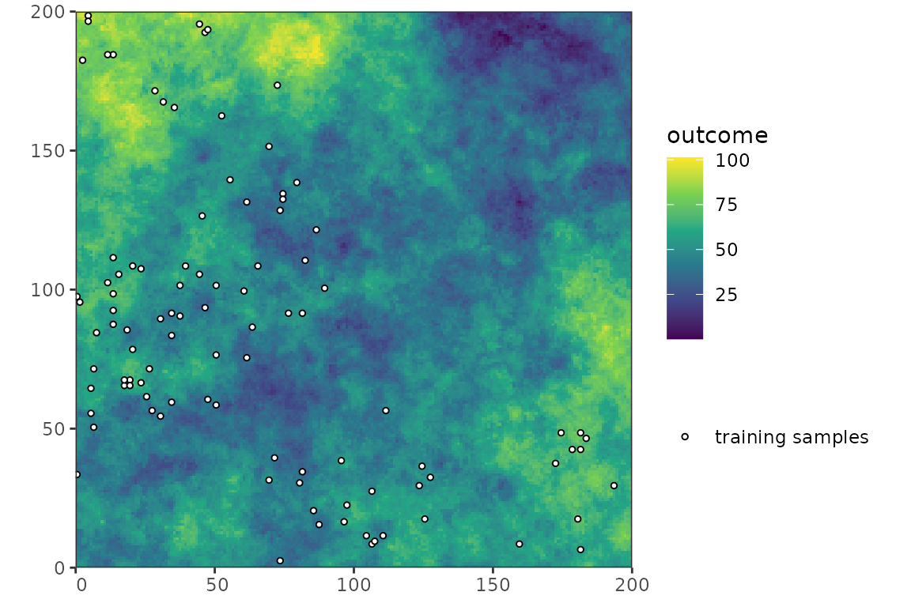
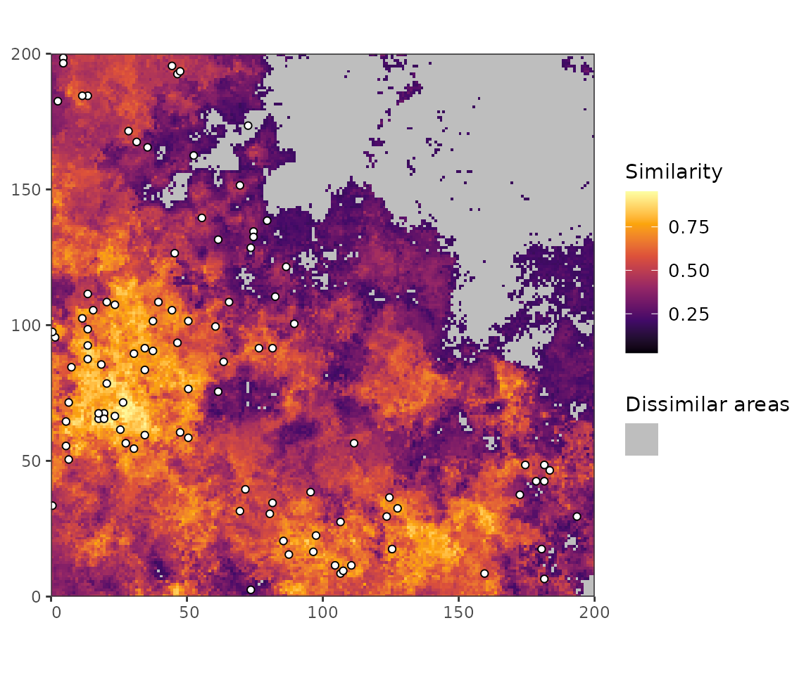
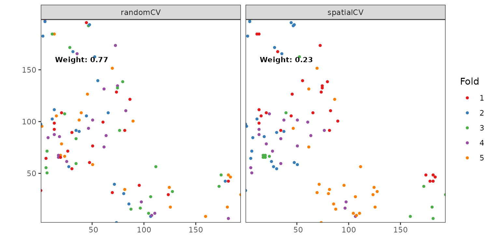

DA-CV
DA-CV.RmdIntroduction
Dissimilarity-adaptive cross-validation (DA-CV) was developed by Wang et al. (2025). It uses adversarial validation (AV) to predict the probability that a prediction location is similar to the training samples. Then it calculates an RMSE based on random CV, as well as spatial+ CV (Wang et al. (2023)), and weights both of them according to the relative area of similar cells, random CV, and dissimilar cells, spatial+ CV.
The more detailed workflow is:
- Generate an AV dataset consisting of the training samples and an equal number of randomly sampled prediction locations.
- Train the AV classifier based on the available predictors to predict the probability that a data point belongs to the training samples, using 50% of the AV dataset.
- Evaluate the AV classifier on the other 50% and calculate the AUC.
- Normalize the AUC to [0, 1] by assigning 0 to AUC = 0.5. This normalized AUC is then interpreted as the overall dissimilarity, D.
- Derive the threshold used to distinguish similar from dissimilar areas from the overall dissimilarity as T(D) = 0.5 × D.
- Predict the similarity of all prediction locations using the AV classifier.
- Binarize the similarity map using T(D).
- Calculate the weighted RMSE as RMSEDA = √(WRDM × RMSERDM2 + WSP × RMSESP2).
Spatial+ CV works as follows:
- Divide samples into blocks using agglomerative hierarchical clustering. The maximum linkage, i.e. the maximum distance between samples in one cluster/block, is derived from the semivariogram of the response values measured at the sampling locations, i.e. the spatial autocorrelation range.
- Average the predictor values, response values, and coordinates of all samples belonging to one block.
- Cluster the blocks in three ways:
- k-means clustering of the coordinates.
- k-prototypes clustering of the predictor values.
- k-means clustering of the response.
- Combine the three clustering results into k folds using the cluster ensemble function “Hybrid Bipartite Graph Formulation”, which finds consistency between the three clustering results.
Setup
library(PDAV)
library(dplyr)
#>
#> Attaching package: 'dplyr'
#> The following objects are masked from 'package:stats':
#>
#> filter, lag
#> The following objects are masked from 'package:base':
#>
#> intersect, setdiff, setequal, union
library(caret)
#> Loading required package: ggplot2
#> Loading required package: lattice
library(terra)
#> terra 1.9.34
library(sf)
#> Linking to GEOS 3.12.1, GDAL 3.8.4, PROJ 9.4.0; sf_use_s2() is TRUE
library(simsam)
library(ggplot2)
library(cowplot)
library(tidyterra)
#>
#> Attaching package: 'tidyterra'
#> The following object is masked from 'package:stats':
#>
#> filter
library(ggnewscale)
set.seed(100)Simulate predictors and response
r <- PDAV:::generate_rast()
predictor_stack <- r[[setdiff(names(r), "outcome")]]
cate_rasters <- which(names(r) %in% c("forest", "grass"))
sampling_r <- r
sampling_r[sampling_r$elev > 60] <- NA
samples <- sam_field(
x = sampling_r,
size = 100,
method = sample_clustered(nclusters = 10, radius = 30, na.rm = TRUE)
)
Figure 1: The predictor stack

Figure 2: The simulated outcome with training locations.
Run DA-CV
Now, we use DA-CV to obtain area estimates of interpolation vs extrapolation areas, that can then be used to derive a weighted RMSE. We leave the autocorrelation threshold at 1, despite the sample variogram showing indicating a range of 5-10, because higher autocorrelation thresholds would result in spatial+ CV-splits that has a smaller size than the sample size. Maybe due to empty clusters?
Adversial validation to obtain relative area size of inter- vs extrapolation
results <- da_cv(
samples = samples,
predictors = r,
response = "outcome",
folds_k = 5,
autoc_threshold = 1
#cate_col_start = min(cate_rasters),
#cate_col_end = max(cate_rasters)
)
#> Setting levels: control = 0, case = 1
#> Setting direction: controls < casesFor the biased sampling design shown here, the AV classifier achieves a performance of . This leads to . The threshold is then . Hence, all prediction cells with a similarity score lower than 0.2 are classified as dissimilar. The relative fraction of prediction locations being similar from the sampling locations is 0.77, while the fraction being dissimilar is 0.23.
plot(results) +
new_scale_fill() +
geom_sf(data = samples, shape = 21, fill = "white") +
coord_sf(expand = FALSE, datum = st_crs(samples, )) +
theme(
legend.position = "right",
plot.title = element_text(face = "bold", hjust = 0.5)
)
Figure 3: The similarity raster resulting from applying the AV classifier to the predictor stack.
Calculate CV results and weigh them according to the area proportions
Lastly, the resulting cross-validation fold assignments could be used to calculate the weighted RMSE of a spatial predictive model.
form <- as.formula(paste0("outcome~", paste0(names(predictor_stack), collapse = "+")))
pgrid <- data.frame(mtry = 6, splitrule = "variance", min.node.size = 5)
samples_df <- samples |>
mutate("randomCV" = results$folds_RDM, "spatialCV" = results$folds_SP) |>
st_drop_geometry()
folds_random <- CAST::CreateSpacetimeFolds(samples_df, spacevar = "randomCV", k = 5)
#> Registered S3 methods overwritten by 'CAST':
#> method from
#> plot.knndm PDAV
#> plot.nndm PDAV
folds_spatial <- CAST::CreateSpacetimeFolds(samples_df, spacevar = "spatialCV", k = 5)
train_cntrl_random <- trainControl(
method = "CV",
index = folds_random$index,
indexOut = folds_random$indexOut,
savePredictions = TRUE
)
train_cntrl_SP <- trainControl(
method = "CV",
index = folds_spatial$index,
indexOut = folds_spatial$indexOut,
savePredictions = TRUE
)
rand_mod <- train(
form,
data = samples_df,
method = "ranger",
trControl = train_cntrl_random,
tuneGrid = pgrid
)
spat_mod <- train(
form,
data = samples_df,
method = "ranger",
trControl = train_cntrl_SP,
tuneGrid = pgrid
)
err_stats_rand <- CAST::global_validation(rand_mod)
err_stats_SP <- CAST::global_validation(spat_mod)
err_stats_weighted <- sqrt(
results$weights[["similar"]] *
(err_stats_rand[["RMSE"]]^2) +
results$weights[["different"]] * (err_stats_SP[["RMSE"]]^2)
)
prediction <- predict(r, rand_mod)The RMSE obtained by DA-CV is 4.806. The maps below depict the difference between predicted and true response:

Figure 4: The different CV fold assignments and their respective weight.